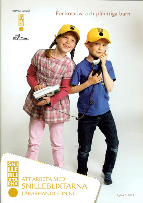

|
Startsidan
Böcker
Dramatik
Kultur-/barnprojekt
Margareta Lindberg Sigfrid |
|

|
|
2009 tog jag initiativ till att etablera Snilleblixtarna i Norrtälje. Snilleblixtarna i Sverige erbjuder pedagoger som arbetar i förskola och skola upp t.o.m. årskurs 5 en metod att utifrån läroplanens mål stimulera nyfikenheten, lusten att lära och förmågan att kritiskt reflektera, att skapa och att agera.
Med stöd från Roslagens Sparbank utbildade vi på Pythagoras i Norrtälje fler lärare än någon annan svensk kommun under 2010.
Mer om Snilleblixtarna hittar du på www.snilleblixtarna.se |